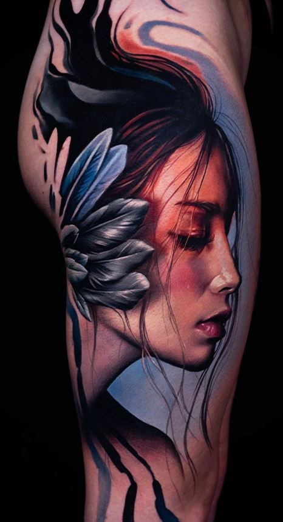
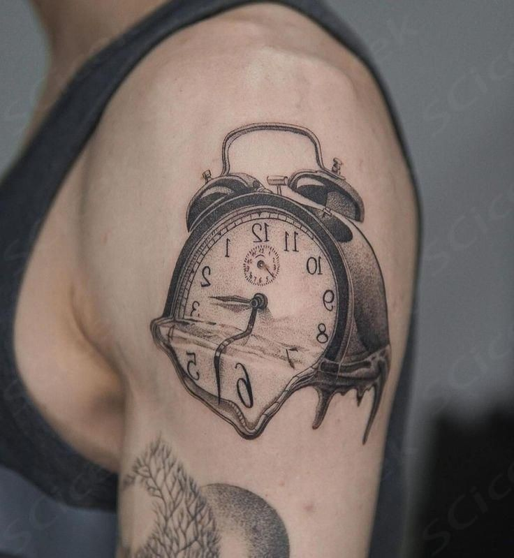
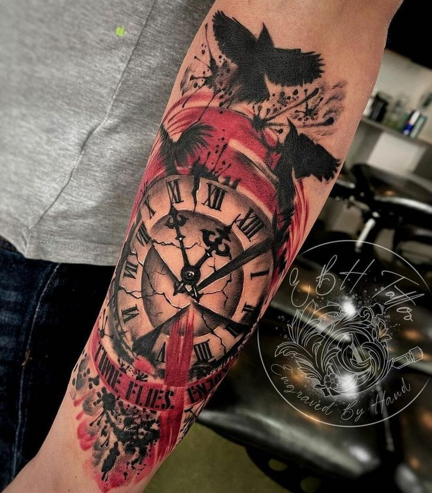
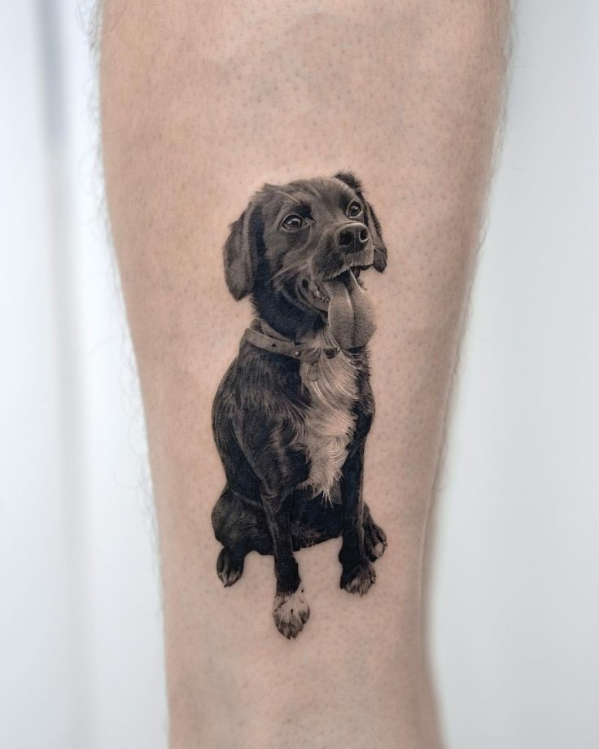
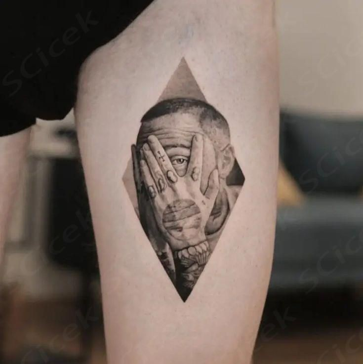

Realism tattoos
About realism tattoos
- The images in realistic tattoos look exactly like they would in real life.
- You are essentially recreating a photo on the skin.
- Realism is a great style to learn because it’s in higher demand than other styles, but it can take a long time to learn.
- Realism tattoos are also the most expensive style to get tattooed.
Common Imagery for the Realism Tattoo Style
- Skulls
- Statues
- Faces/portraits
- Animals
- Plants
- Rules for Realistic tattoos:
- Don’t use hard outlines. Realism usually asks for you to create a 3-D image, which means it doesn’t actually end, it just curves. On a 2-D surface, that will look like a soft, undefined edge.
- We recommend using curved mags, especially if you’re doing a portrait tattoo. They’ll help you get smoother shades while causing less trauma to the skin since they work with the skin instead of against it like a flat needle.
Note:
- You need to mark out the shading for your realism tattoos on your stencil. We recommend designing realism stencils digitally because programs like Procreate and Photoshop let you use reference images directly in your stencil and mark out shading on different “layers.”




